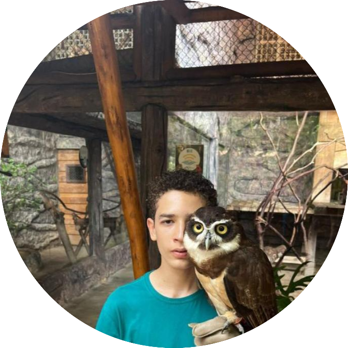

Desenvolvedor web com experiência no desenvolvimento de interfaces e aplicações para a web, utilizando tecnologias como HTML, CSS, JavaScript. Habituado a boas práticas de desenvolvimento, versionamento com Git e criação de layouts responsivos. Em busca de oportunidade para consolidar a carreira e contribuir com projetos de impacto real.
| Formação | Cursos | |
|---|---|---|
| Desenvolvimento Front-End | Desenvolvimento Web / Bacharelado em Ciência da Computação | HTML, CSS e JavaScript (Alura, Rocketseat, DIO) |
| Desenvolvimento Back-End | Bacharelado em Sistemas de Informação / Engenharia de Software | Node.js, Python com Django, PHP (Udemy, Coursera) |
| Desenvolvimento Full Stack | Bacharelado em Engenharia de Software / Bootcamp Full Stack | Full Stack Web Development (Rocketseat, The Odin Project) |
| Segurança em Aplicações Web | Bacharelado em Segurança da Informação / Ciência da Computação | OWASP, Ethical Hacking Web (Desec, Udemy) |